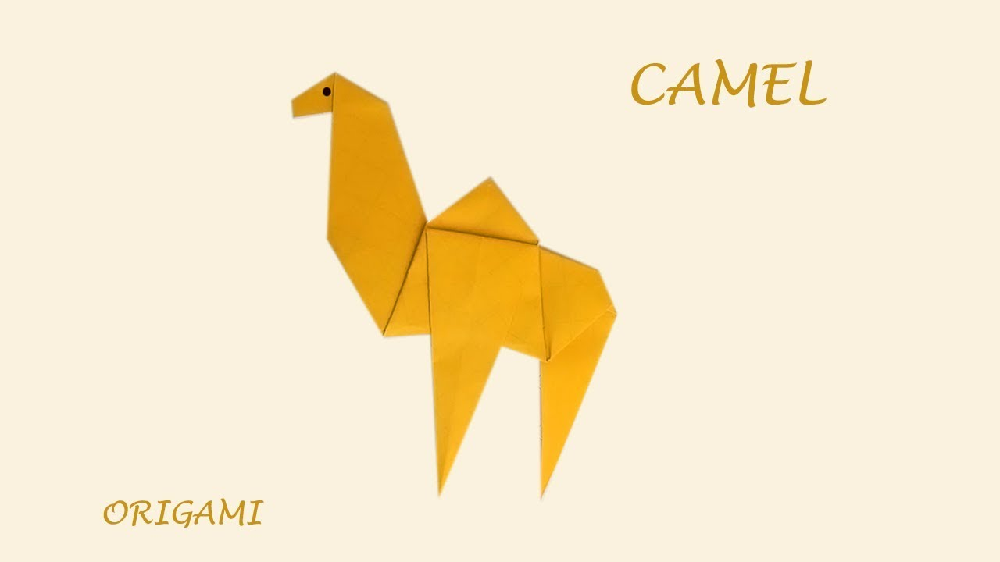
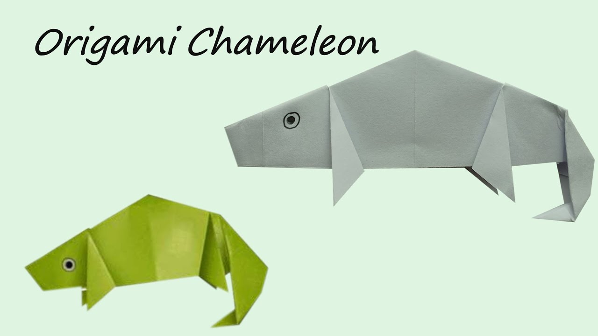
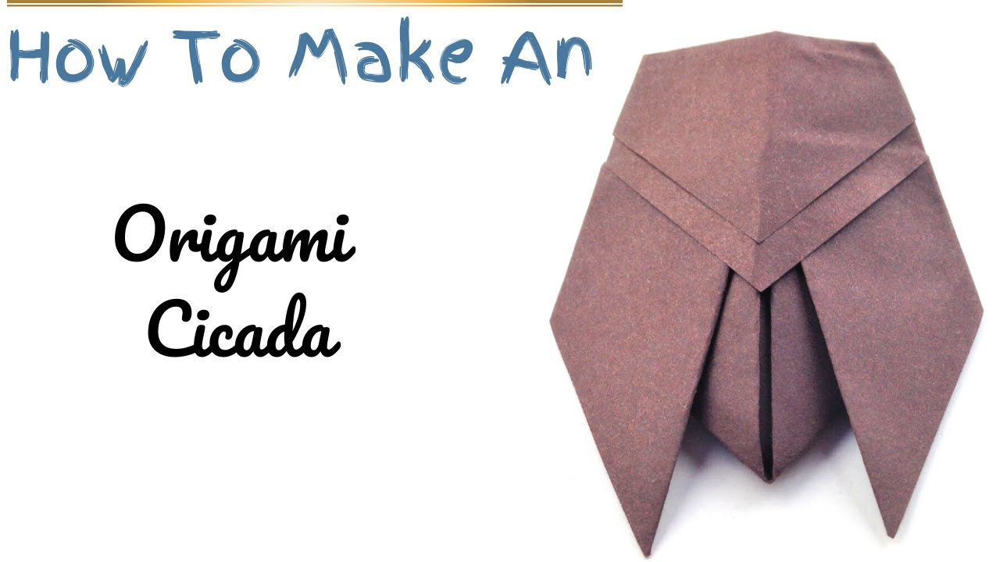
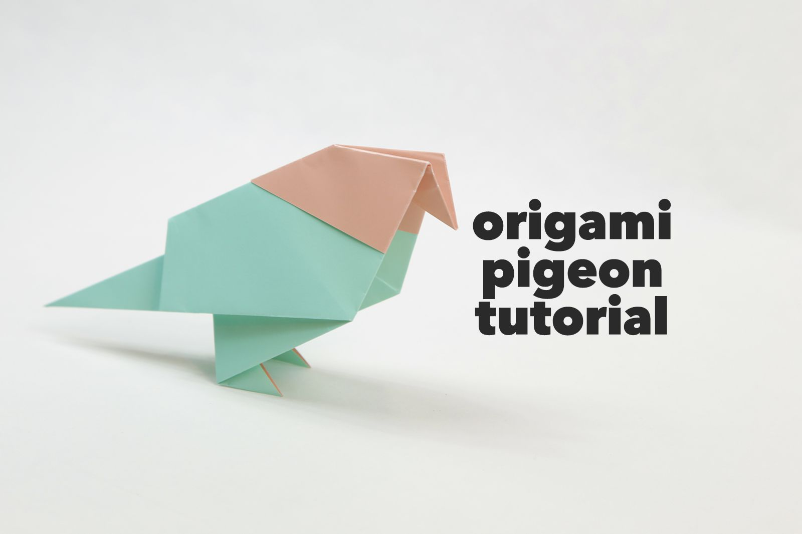
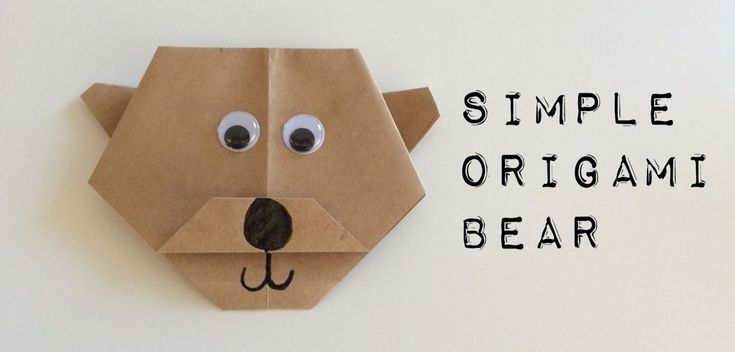

This site is to help you get creative! Try out these different and unique origami designs
Facts about Camal
1. Camels have three sets of eyelids and two rows of eyelashes to keep sand out of their eyes.
2. Camels have thick lips which let them forage for thorny plants other animals can’t eat.
3. Camels can completely shut their nostrils during sandstorms.
Facts about Chameleon
1. Chameleons inhabit warm habitats mainly in sub-Saharan Africa and the island of Madagascar.
2. Veiled Chameleons are considered an invasive species in Hawaii largely due to escaped pets.
3. Chameleons use their long tail when moving in the trees to grab a branch and secure their position
Facts about Pandas
1.Young elephants, pandas, koalas, and hippos eat the feces of their mothers.
2. All pandas in the world are on loan from China.
3. 99% of a Panda's diet consists of bamboo.
Facts about Cicada
1. They spend most of their lives underground as larvae.
2. They have a short adulthood — from two to six weeks.
3. There are generally two types of cicadas.
Facts about Pigeons
1. Pigeons are renowned for their outstanding navigational abilities.
2. Pigeons are highly sociable animals. They will often be seen in flocks of 20-30 birds.
3. Both female and male pigeons share responsibility of caring for and raising young
Facts about Bears
1. Bears are extraordinarily intelligent animals.
2. Bears grieve deeply for others. Cubs are known to moan and cry when separated from their mothers.
3. Some species of Asiatic bear build nests in the trees.